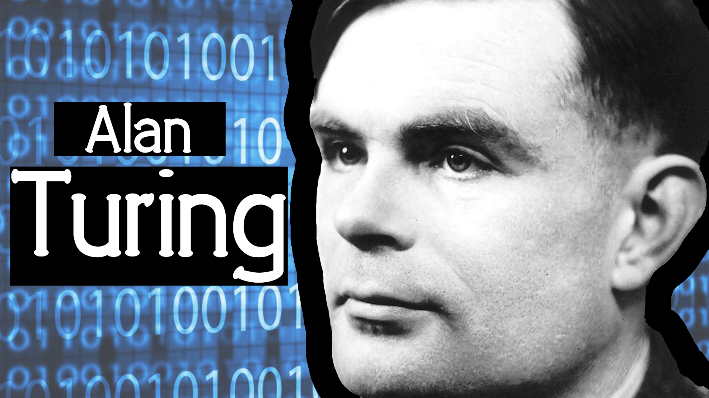

Alan Mathison Turing (Londres, 23 de junho de 1912 — Wilmslow, Cheshire, 7 de junho de 1954) foi um matemático,[1] cientista da computação, lógico, criptoanalista, filósofo e biólogo teórico britânico.
Sobre a lenda
- Turing foi altamente influente no desenvolvimento da moderna ciência da computação teórica, proporcionando uma formalização dos conceitos de algoritmo e computação com a máquina de Turing, que pode ser considerada um modelo de um computador de uso geral.
- Ele é amplamente considerado o pai da ciência da computação teórica e da inteligência artificial. Apesar dessas realizações ele nunca foi totalmente reconhecido em seu país de origem durante sua vida por ser homossexual e porque grande parte de seu trabalho foi coberto pela Lei de Segredos Oficiais.
- Durante a Segunda Guerra Mundial Turing trabalhou para a Escola de Código e Cifras do Governo (GC&CS) em Bletchley Park, o centro britânico de criptoanálise que produzia ultra inteligência. Por um tempo ele liderou a Hut 8, a seção responsável pela análise criptográfica naval alemã. Lá ele desenvolveu várias técnicas para acelerar a quebra das cifras alemãs, incluindo melhorias no método de bombardeio polonês antes da guerra, bem como uma máquina eletromecânica que poderia encontrar configurações para a máquina Enigma. Turing desempenhou um papel crucial na quebra de mensagens codificadas interceptadas que permitiram aos Aliados derrotar os nazistas em muitos compromissos cruciais, incluindo a Batalha do Atlântico, e ao fazê-lo os ajudou a vencer a guerra. Devido aos problemas da história contrafactual, é dificil estimar o efeito preciso que a inteligência ultra teve na guerra mas foi estimado que este trabalho encurtou a guerra na Europa em mais de dois anos e salvou mais de 14 milhões de vidas.
- Após a guerra Turing trabalhou no Laboratório Nacional de Fisica, onde projetou o Mecanismo de Computação Automática, um dos primeiros projetos para um computador de programa armazenado. Em 1948 Turing ingressou no Laboratório de Máquinas de Computação de Max Newman, na Victoria University de Manchester, onde ajudou a desenvolver os computadores de Manchester[8] e se interessou por biologia matemática. Ele escreveu um artigo sobre as bases químicas da morfogênese e previu reações químicas oscilantes, como a reação de Belousov Zhabotinsky, observada pela primeira vez na década de 1960.
- Turing foi processado judicialmente em 1952 por atos homossexuais: a Emenda Labouchere de 1885 determinara que "indecência grosseira" era uma ofensa criminal no Reino Unido. Ele aceitou o tratamento de castração química, com dietilestilbestrol, como alternativa à prisão. Turing morreu em 1954, 16 dias antes de seu 42º aniversário, por envenenamento por cianeto. Um inquérito determinou sua morte como suicídio, mas se observou que a evidência conhecida também é consistente com envenenamento acidental. Em 2009, após uma campanha na Internet, o primeiro-ministro britânico Gordon Brown fez um pedido de desculpas público e oficial a Turing em nome do governo británico pela "maneira terrível como foi tratado". A rainha Elizabeth II concedeu a Turing um perdão póstumo em 2013. A "lei Alan Turing" é agora um termo informal para uma lei britânica de 2017 que retroativamente perdoou homens advertidos ou condenados sob a legislação histórica que proibia atos homossexuais.